This little ruby laser was made in a few hours with material that I had in stock for nearly 47 years!
The goal is to make with this reflective cavity that I received from SCHOTT-JENAer GLASS GmbH, in 1969, a different ruby laser arrangement.
The major advantage of this type of reflector is to concentrate only the useful wavelengths to pump the ruby and not to concentrate the infrared radiation that warms the ruby unnecessarily.
The pumping efficiency is 4 to 5 times more efficient than helical flash tube pumping.
Several arrangements will be made: relaxed mode (2-3 ms), triggered mode with SCHOTT RG695 filter (20ns), triggered mode + rotating mirror(8ns), Triggered mode with saturable dye such as Malachite Green or Cryptocyanine (15ns), Trigger mode only Rotary mirror (50ns), Block modes (20ps)
The triggering of the ruby laser by a SCOTT RG695 filter behaves like a saturable absorber. During optical pumping as soon as the ruby reaches the laser threshold (3-level system) ie that half of the chromium ions are excited, then it is necessary to avoid that the ruby starts to laser is blocked the resonator so that the population inversion increases to its maximum.
For this purpose, a saturable absorber is used which prevents the laser wave from amplifying during successive passages.
This allows to obtain a larger population inversion and to generate a giant impulse!
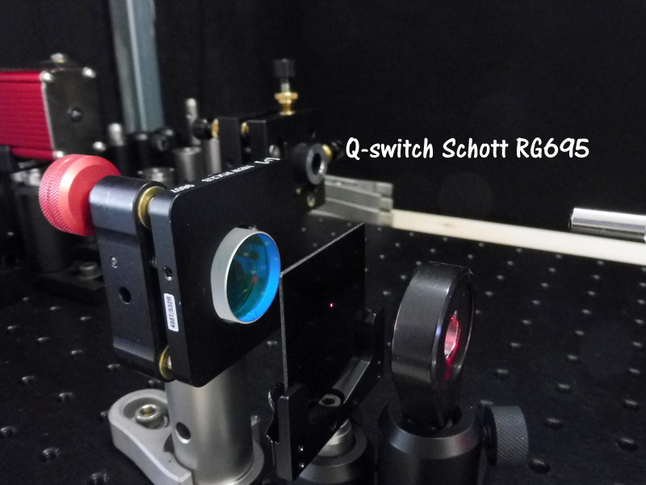
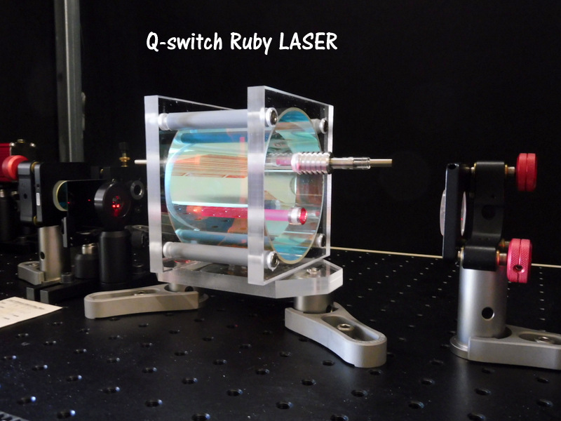
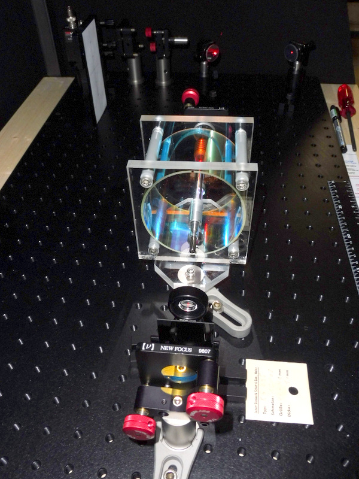
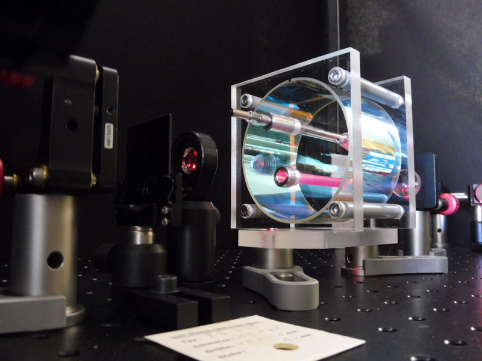
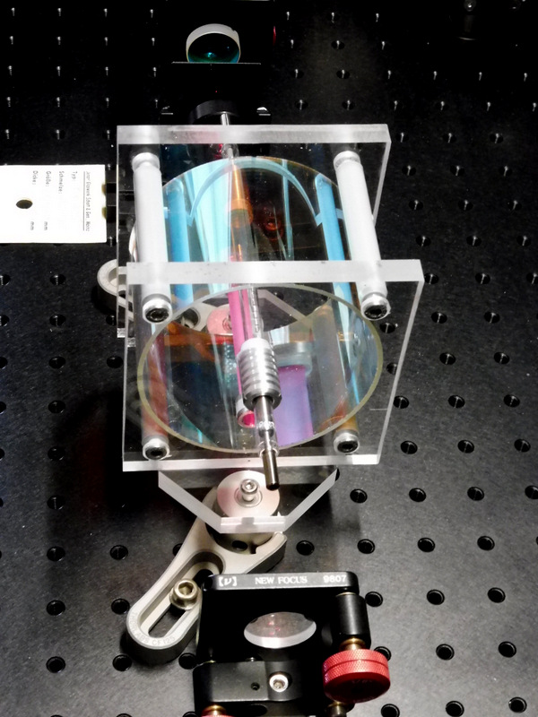
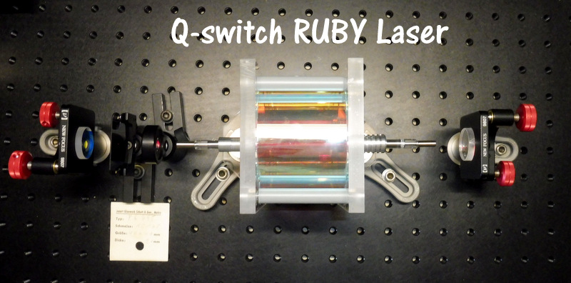
WORKING IN RELAX MODE The first step is to fill the flash tube with a capacitor bank.
The fluorescence time for the ruby is 3 milliseconds so a discharge duration of 1 millisecond is a good value that allows a longer flash tube life for a given energy. Another advantage is to be able to use electrolytic capacitors which have a large internal inductance and a large storage energy for a reduced volume. As the laser is not provided with cooling and a repetition rate of 1 pulse per minute is perfectly suitable for this type of capacitor.
The explosion energy of a similar tube for a 1ms discharge is 2400 Joules!
The discharge energy for a lifetime of 1000 pulses is 45% Eexpl for 10'000 pulses 35% for 105
pulses of 27% and 20% for 106 pulses.
Determination of the electrolytic capacitor bank, the load voltage and the choke with the FENIX calculator
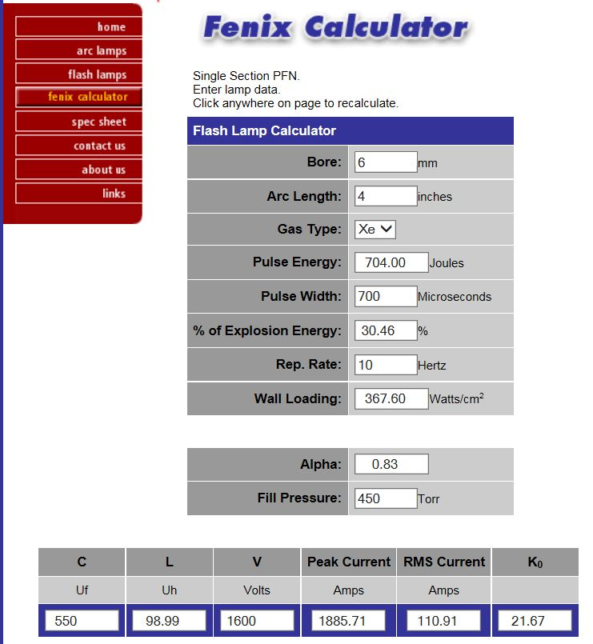
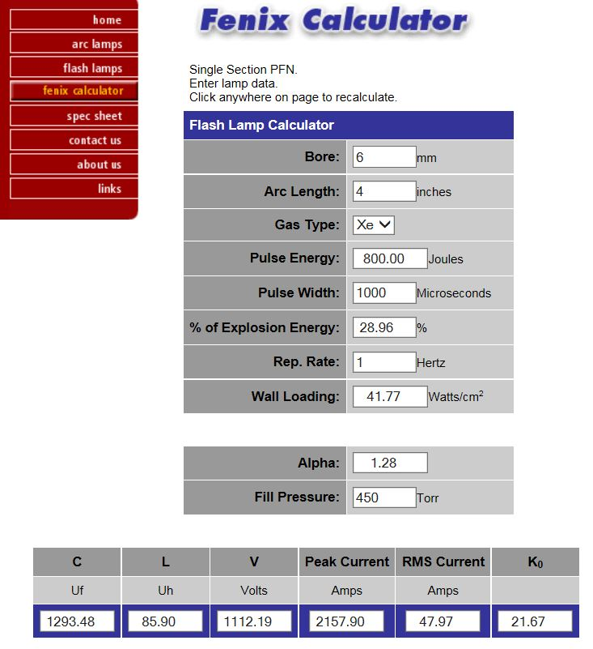
In my stock of hardware I found a small bench of 8 electrolytic capacitors of 2200uF / 450V connect them to form a capacity of 550uF under 1800 V.They are connected in 2 parallel groups of 4 capacitors in series.
The ruby doped with 0.035% Cr+3 of diameter 7mm and 70mm of length can store an energy of 2.18J / cm3
thus a energy in relaxed mode at the best of 5.3J. The pumping threshold in elliptical reflector is 100J / cm3 or 270J!
Now preparing the electrolytic capacitor bank and the inductor and measuring the discharge time by means of a silicon photodiode with an attenuator filter.
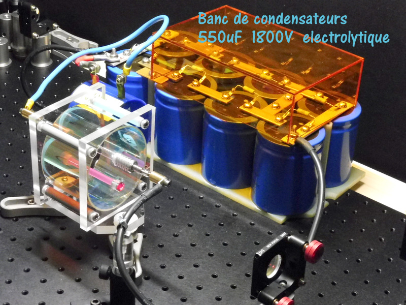
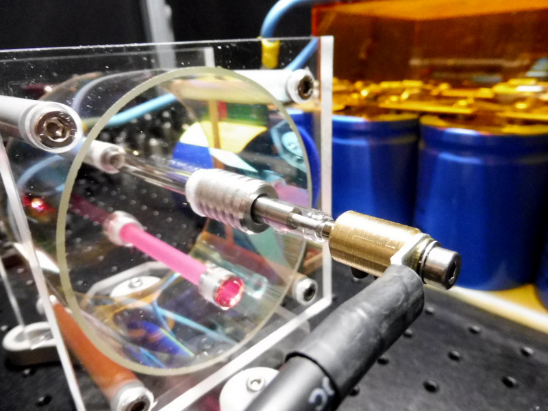
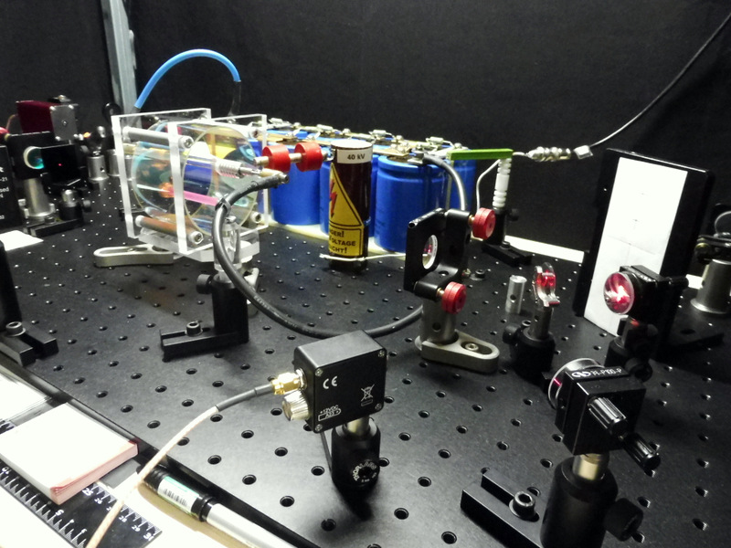
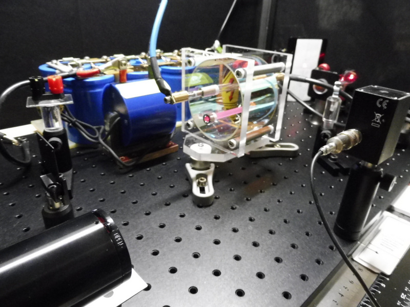
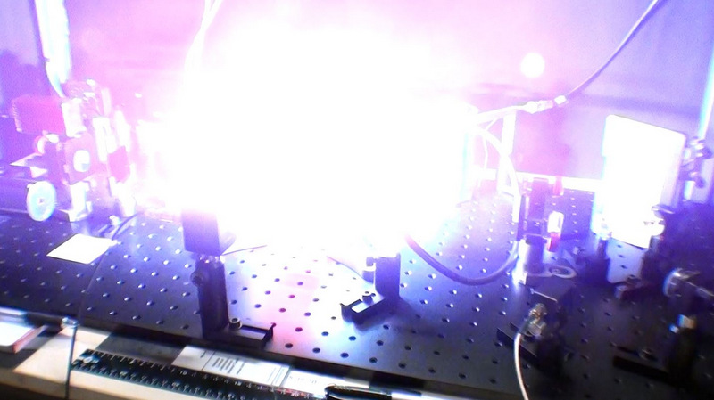
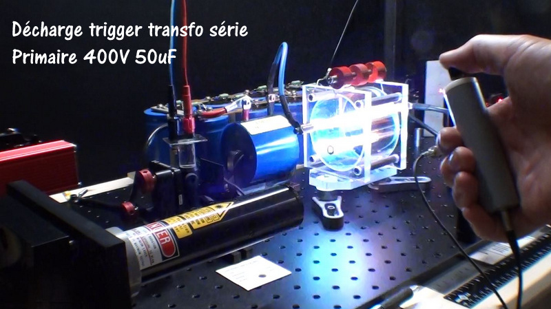
Measuring Flash Flash Duration Using a Tektronix 7704 Photodiode and Oscilloscope
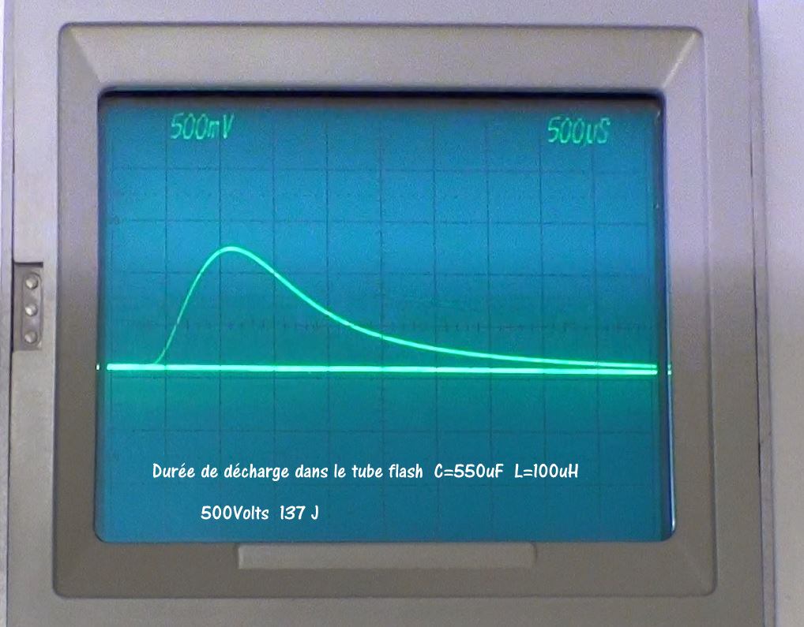
With this electrolytic capacitor bank with an equivalent capacity of 550uF and a series of flash tube ignition transformer that has an inductance of 100uH the duration of the flash is 1.2 ms at mid-height which is a good value for the pumping of the ruby which at a fluorescence duration of 3ms.
In the photo below we see the remains of fluorescence ruby about 50ms after the end of flash pumping!